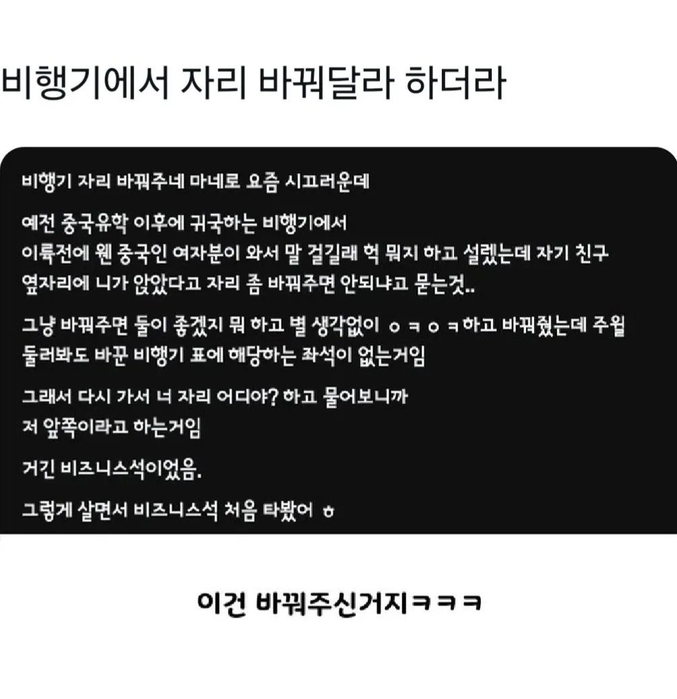

비행기에서 자리 바꿔달라 하더라
댓글
게임하는 따거도 가끔 존재함 (핵쟁이 제외)
대협
저렇게 되면 비즈니스 가면 식사같은건 그대로 비즈니스석꺼 나오는건가.
그럴껄?
단거리 비즈니스는 그냥 우등좌석임.
하지만 좋은걸...나 처음에 은식기 받고 충격받았음 이거 비행기에서 위험해서 안주는건줄 알았거든 ㅠㅠ
일단 비지니스석 인원이 적으니까 난동 확률이 적을테니
쟤가 말하는 단거리 비지니스는 그게 아닐텐데
1시간반짜리 초단거리 비즈니스만 타도
나오는 식사가 차원이 다른데 뭔 우등좌석이야...
태화고속 강릉방면 '비지니스'석 2A
ㅅㅅㅅㅅㅅㅅㅅ
중국 한국이면 비행거리가 짧긴하지 ㅋㅋ
난 코로나 때 한국 들어오는 비행기가 비즈니스만 남아서 처음 타봤음.
남자가 안바꿔주길 바랬을수도 있겠다ㅋㅋㅋㅋ
여자친구가 삐지니까 자리 바꿔달라고 말은 꺼낸건데
아 이걸 바꿔주네
아멕스 카드가있어서 포인트가 남아돌아서
일본왔다갔다할때는 포인트로 비즈니스 자주타는데 솔직히 차이 존나남 ㅋㅋ
그외는 좌석이없어서 타기가힘들고 ㅠㅠ
난 국내선 제주행 비즈니스 탔는데 그거마저 좋더라ㅋㅋㅋ
쉐쉐 따거